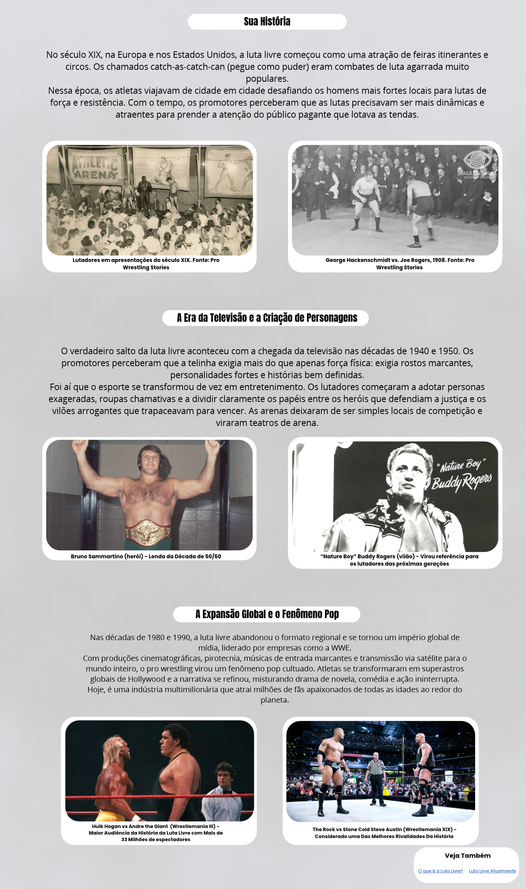

No século XIX, na Europa e nos Estados Unidos, a luta livre começou como uma atração de feiras itinerantes e circos. Os chamados catch-as-catch-can (pegue como puder) eram combates de luta agarrada muito populares.
Nessa época, os atletas viajavam de cidade em cidade desafiando os homens mais fortes locais para lutas de força e resistência. Com o tempo, os promotores perceberam que as lutas precisavam ser mais dinâmicas e atraentes para prender a atenção do público pagante que lotava as tendas.

Lutadores em apresentações do século XIX. Fonte: Pro Wrestling Stories
George Hackenschmidt vs. Joe Rogers, 1908. Fonte: Pro Wrestling Stories
O verdadeiro salto da luta livre aconteceu com a chegada da televisão nas décadas de 1940 e 1950. Os promotores perceberam que a telinha exigia mais do que apenas força física: exigia rostos marcantes, personalidades fortes e histórias bem definidas.
Foi aí que o esporte se transformou de vez em entretenimento. Os lutadores começaram a adotar personas exageradas, roupas chamativas e a dividir claramente os papéis entre os heróis que defendiam a justiça e os vilões arrogantes que trapaceavam para vencer. As arenas deixaram de ser simples locais de competição e viraram teatros de arena.
Bruno Sammartino (herói) — Lenda da Década de 50/60
“Nature Boy” Buddy Rogers (vilão) — Virou referência para os lutadores das próximas gerações
Nas décadas de 1980 e 1990, a luta livre abandonou o formato regional e se tornou um império global de mídia, liderado por empresas como a WWE.
Com produções cinematográficas, pirotecnia, músicas de entrada marcantes e transmissão via satélite para o mundo inteiro, o pro wrestling virou um fenômeno pop cultuado. Atletas se transformaram em superastros globais de Hollywood e a narrativa se refinou, misturando drama de novela, comédia e ação ininterrupta.
Hoje, é uma indústria multimilionária que atrai milhões de fãs apaixonados de todas as idades ao redor do planeta.
Hulk Hogan vs. Andre the Giant (WrestleMania III) — Maior Audiência da História da Luta Livre com Mais de 33 Milhões de espectadores
The Rock vs. Stone Cold Steve Austin (WrestleMania XIX) — Considerada uma das melhores rivalidades da história
Faça seu cadastro e login clicando aqui.
Deixe sua avaliação, seu interesse pelo esporte e um comentário para melhorar este site.
Juntos, podemos construir uma comunidade forte no Brasil ♥
Feito com amor por Gustavo W. ♥ SPTech © 2023–2026